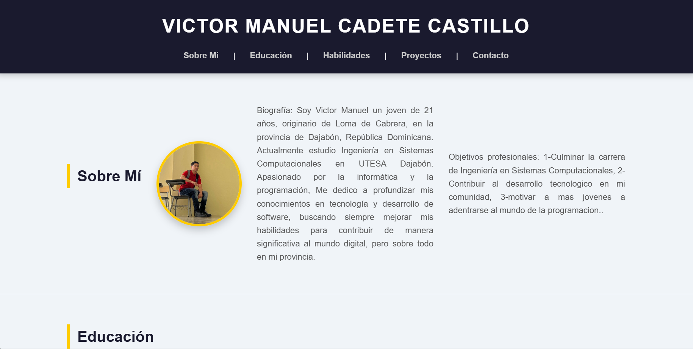

Biografía: Soy Victor Manuel un joven de 21 años, originario de Loma de Cabrera, en la provincia de Dajabón, República Dominicana. Actualmente estudio Ingeniería en Sistemas Computacionales en UTESA Dajabón. Apasionado por la informática y la programación, Me dedico a profundizar mis conocimientos en tecnología y desarrollo de software, buscando siempre mejorar mis habilidades para contribuir de manera significativa al mundo digital, pero sobre todo en mi provincia.
Objetivos profesionales: 1-Culminar la carrera de Ingeniería en Sistemas Computacionales, 2-Contribuir al desarrollo tecnologico en mi comunidad, 3-motivar a mas jovenes a adentrarse al mundo de la programacion..
Formación académica: Tecnico en gestión tributaria, estudiante de Ingenieria en Sistemas Computacionales.
Cursos relevantes: [Introducción a C++ - Edutin Academy, Python Basico - Netzun].
Tecnologías en aprendizaje: [HTML, CSS, JAVASCRIPT].
Idiomas: [Español, Inglés].
Otras habilidades: [Resolución de problemas, Pensamiento crítico,Trabajo en equipo, Gestión de proyectos, Creatividad, Adaptabilidad, Liderazgo, Aprendizaje continuo.
Descripción del proyecto: Este proyecto es un portafolio en línea que presenta la trayectoria académica y profesional de Victor Manuel Cadete Castillo. Diseñado para resaltar mis habilidades en programación y tecnología, el sitio incluye secciones dedicadas a mi biografía, educación, habilidades, proyectos realizados y datos de contacto. Utilizando HTML y CSS, la página busca ofrecer una navegación intuitiva y una presentación atractiva de mis logros, con el objetivo de conectar con oportunidades laborales y colaborar en el desarrollo tecnológico de mi comunidad..
